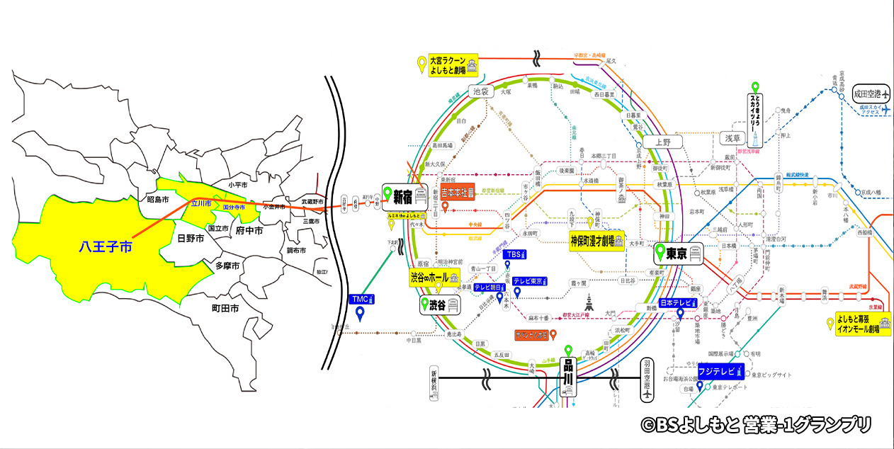
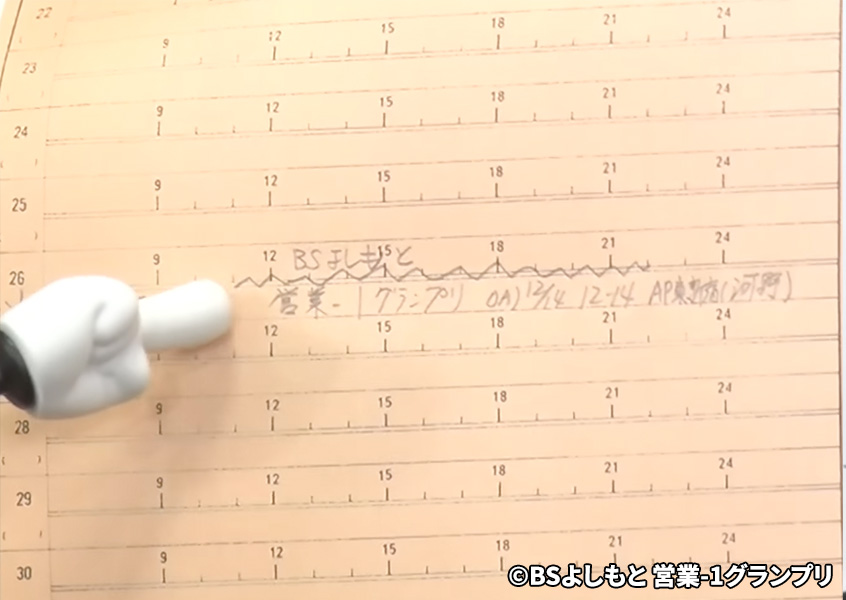
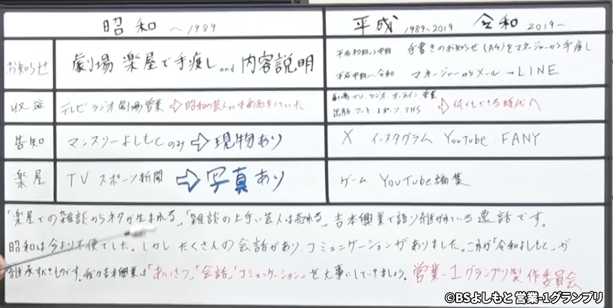
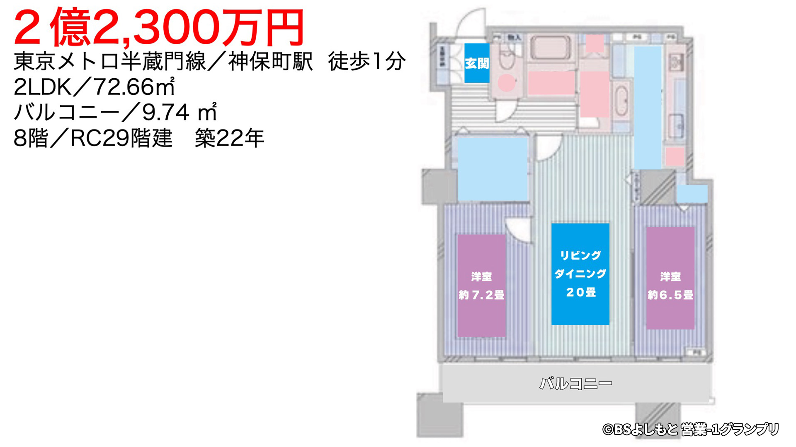
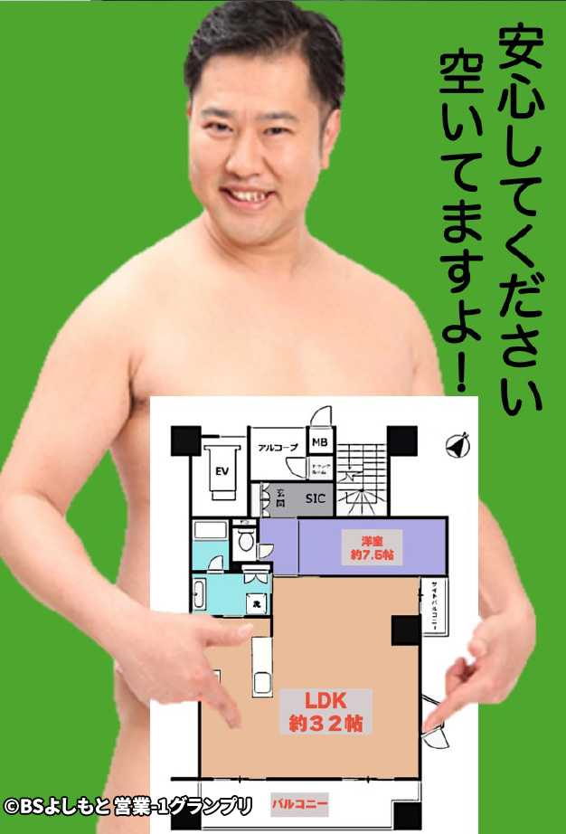
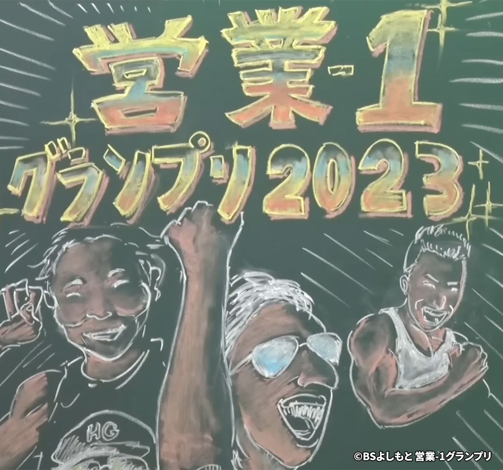
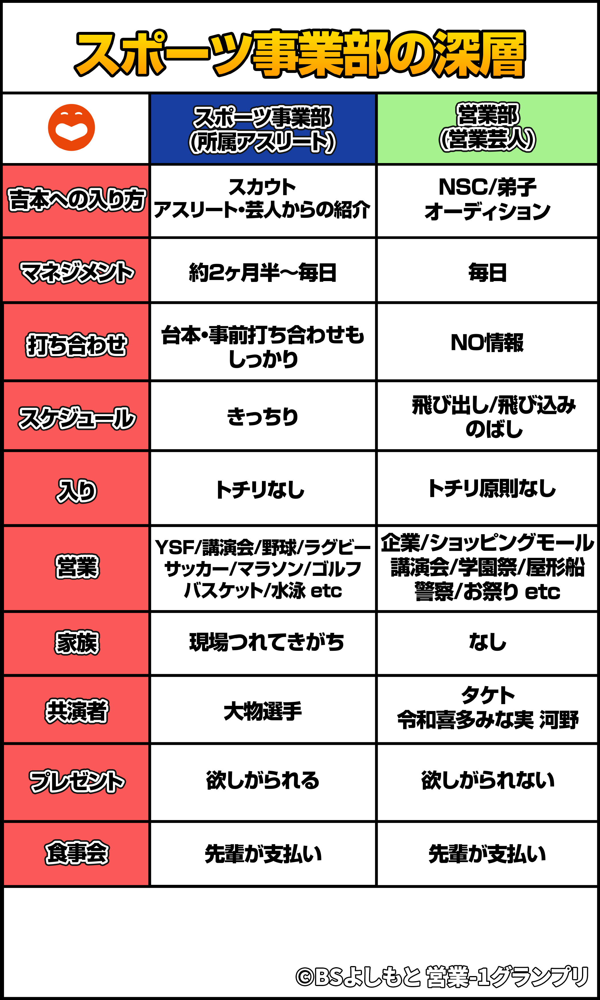
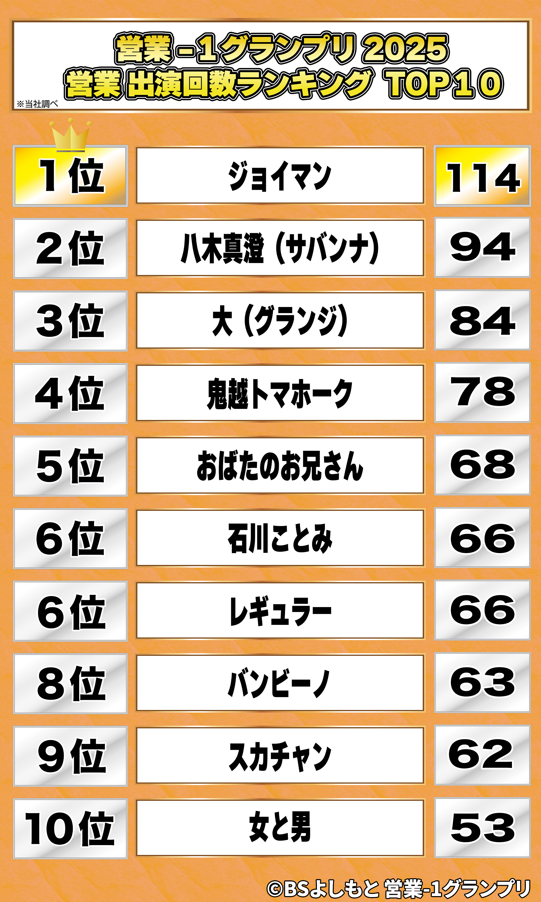
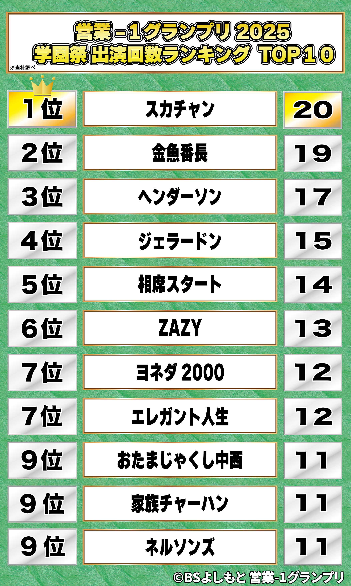
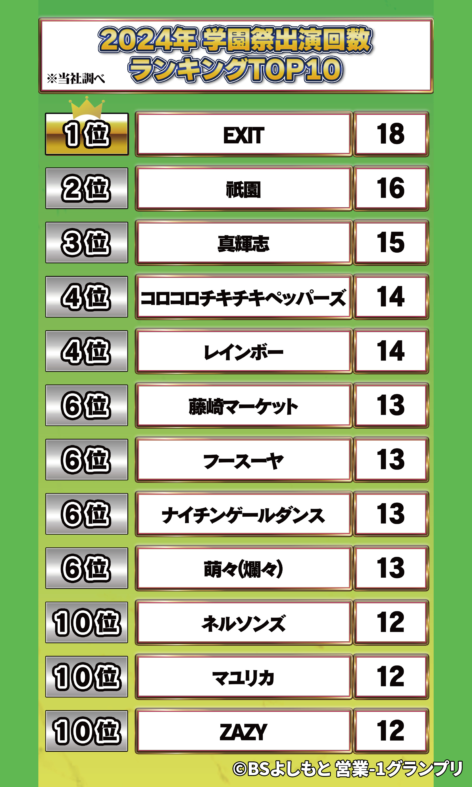

八木解説資料
21件

2023八木解説資料 吉本営業年表③（サバンナ目線）2024年は営業戦国時代
該当シーンを見る

2024 上半期SP営業芸人が東京進出したら住むべき場所①
該当シーンを見る

2024 上半期SP八木解説資料 ズドンと行ける八王子のサンプル物件①
該当シーンを見る

2024 上半期SP八木解説資料 ズドンと行ける八王子のサンプル物件②
該当シーンを見る

2024 上半期SP八木解説資料 マイホーム購入芸人ローン完済表
該当シーンを見る

2024 総決算SP八木解説資料 よしもとから失われたもの/失ってはいけないもの
該当シーンを見る

2024 総決算SP八木解説資料 オレンジのスケジュール台帳
該当シーンを見る

2024 総決算SP八木解説資料 昭和・平成・令和 三時代別「営業の歴史」
該当シーンを見る

2025 上半期SP八木解説資料 安村が住むべき物件③ 焼津
該当シーンを見る

2025 上半期SP八木解説資料 安村が住むべき物件④ 焼津
該当シーンを見る

2025 総決算SP八木が見た未来 2045年リニア行ってこい想定スケジュール
該当シーンを見る

2025 総決算SP営業-１グランプリ24時間テレビ～営業は芸人を救う～ジョイマン24時間営業全国制覇プロジェクト
該当シーンを見る
貴重資料
12件

2023アタック西本作：黒板似顔絵タイトル
該当シーンを見る
2023東西営業都市伝説資料③ 絶対やりたいことを絶対やりたい男
該当シーンを見る

2024 総決算SP吉本興業徹底解剖 スポーツ事業部の深層
該当シーンを見る

2025 上半期SP吉本興業大改革2030～今やめるべきこと そして今やるべきこと～
該当シーンを見る

2025 総決算SP営業の歴史資料（1912年～1982年）～吉本興業未来図～八木が見た未来～
該当シーンを見る

2025 総決算SP吉本興業未来図～八木が見た未来～(2025年～2058年)
該当シーンを見る
ランキングまとめ
営業出演回数・学園祭出演回数の記録
6件
2025年

2025 総決算SP2025年 営業出演回数ランキング
該当シーンを見る

2025 総決算SP2025年 学園祭出演回数ランキング
該当シーンを見る
2024年

2024 総決算SP2024年 学園祭出演回数ランキング
該当シーンを見る